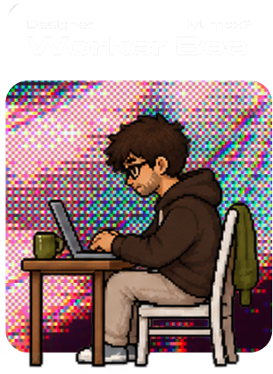

Interaction & Product Designer, Sydney.
I make things that explain themselves.

Two degrees, both in design, both spent building the thing rather than writing about it.
Four years of it, mostly as the person who both decided the thing and built it.
Designer. I make things that explain themselves — mostly interfaces, occasionally a maze.